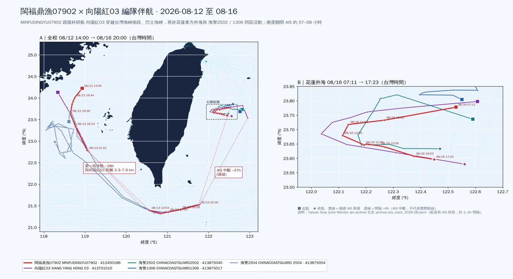

路透社獨家報導 × 本站 AIS 存檔交叉驗證 • 伴航、同框、同步關閉 AIS
路透社 2026 年 10 月 8 日獨家報導：中國漁船「閩福鼎漁07902」（MMSI 412450186）被台灣安捷航空的偵察機記錄在花蓮外海逾 30 浬處， 與海警2502、科研船向陽紅03 同區活動，是已知首次在台灣東部外海辨認出中國海上民兵船。本站以自有 AIS 存檔重建該船 8/11–8/21 的完整航跡，結果與報導相符，並補上三件報導未揭露的事：
English abstract: Reuters reported on 8 Oct 2026 that the Chinese militia fishing boat Minfudingyu 07902 was seen off Hualien with CCG cutter 2502 and research vessel Xiang Yang Hong 03. Our own AIS archive confirms it and adds that the boat had joined the research ship in the Taiwan Strait four days earlier, operated alongside CCG 2502 and 1306 off Hualien on 16 Aug (Taiwan time), and was silent on AIS for ~57 h before and ~58 h after that day, while the research ship and both cutters went dark together four times, reappearing in the same snapshot three times.

ais-archive 分支 archive/ais_track_2026-08.jsonl。
路透社記者 Yimou Lee 於 2026 年 10 月 8 日發出獨家報導，依據的是台灣安捷航空（Apex Aviation）的偵察監測報告。 報告指出，一艘兼具海上民兵身分的中國漁船「閩福鼎漁07902」，於 8 月中旬某一天在花蓮縣外海逾 30 浬處， 與中國海警船 2502、科研船向陽紅03 一同活動，三船分布在半徑約 10 浬的範圍內。安捷以雷達截圖、紅外線影像與 AIS 資料記錄這次接觸， 並以防範對方反偵察為由，請路透社不要公開確切日期。
兩名台灣高層官員向路透社證實三船於 8 月中旬出現在台灣附近。其中一人表示，當局已確認該漁船屬於解放軍的海上民兵船隊， 台灣一直在追蹤這支船隊，而這艘船當時正「配合中國海警的海上騷擾演練」；另一名官員說，三船出沒的是「中國船隻不常使用的區域」， 已被列為重點監控對象。國防部則表示，北京是在「以執法與科研為掩護進行騷擾」。中國國台辦與國防部未回應路透社的詢問。
報導也提到兩項背景：台灣官員認為中國自 6 月起加強在東部外海的活動，可能在演練海上封鎖；而安捷這家以飛行訓練與包機為主業的公司， 近年投入民間空中偵察，是「全社會防衛韌性」政策下民間參與的案例，該公司強調巡邏是獨立進行、並非受政府委託。
報導刻意隱去日期、也只提到三艘船。這正是公開 AIS 資料可以補位的地方：只要這幾艘船有在廣播 AIS， 本站每 1–2 小時保存一次的航港局 AIS 快照就會留下它們的位置。
本站的 ais-archive 分支永久保存每一輪 AIS 抓取的快照，供航跡回溯與模型訓練使用。2026 年 8 月的一級航跡檔（中國漁船、公務船與可疑船隻）
共 346 個快照，涵蓋 8/1 至 8/27。從中取出五艘船：閩福鼎漁07902（412450186）、向陽紅03（413701510）、
海警2502（413875040）、海警1306（413875017）與海警2504（413875054），重建出下表的時間線（皆為台灣時間）。
| 時間（台灣） | 事件 | 依據 |
|---|---|---|
| 08/04–08/11 | 向陽紅03 停泊廈門（北緯 24.55、東經 118.10），航速 0–0.1 節 | 向陽紅03 每日 7–11 筆定位 |
| 08/11 14:12 | 民兵漁船首次出現在本站資料：福建北部沿海（27.20°N, 120.38°E），航速 0，隨即以 9–10 節南下 | 07902 首筆定位 |
| 08/12 白天 | 向陽紅03 駛離廈門南下；民兵漁船沿福建沿海持續南下接近 | 兩船距離由 173 公里縮短到 29 公里 |
| 08/12 19:39 | 會合：民兵漁船與向陽紅03 相距 5.5 公里、與海警2504 相距 3.5 公里（台灣海峽南段，23.64°N, 118.65°E） | 同一快照三船定位 |
| 08/12 19:39 – 08/13 22:16 | 三船編隊經台灣海峽南段、巴士海峽東行，民兵漁船與向陽紅03 間距維持 3.3–7.9 公里，航速 8–11 節 | 9 個共同快照 |
| 08/13 22:16 | 民兵漁船與向陽紅03 在巴士海峽東口（21.5°N, 121.8°E）同時從 AIS 消失 | 兩船最後一筆 |
| 08/16 01:12 – 07:11 | 向陽紅03（01:12）、海警2502（05:12）、民兵漁船與海警1306（07:11）先後在花蓮外海重新出現 | 空白 57 小時 |
| 08/16 07:11 – 17:23 | 四船同框：花蓮外海東西向來回，民兵漁船在 10 小時內留下 10 筆定位 | 見第三節 |
| 08/16 17:23 | 民兵漁船再度從 AIS 消失 | 最後一筆在 23.60°N, 122.45°E |
| 08/19 03:21 | 民兵漁船重新出現在巴士海峽東口（21.50°N, 121.75°E），已轉向西行返航 | 空白 58 小時 |
| 08/19 – 08/21 | 經台灣海峽北上，08/21 17:04 回到出航時的福建北部沿海（27.13°N, 120.46°E）並停止移動 | 07902 共 58 筆定位 |
| 08/16 – 08/25 | 向陽紅03 與海警2502、1306 留在花蓮外海作業約 10 天，08/25 起南下經巴士海峽返航，08/27 回到台灣海峽南段 | 向陽紅03 共 143 筆定位 |
把航跡疊起來看，路透社報導的那一天只是一趟約 10 天航程的中段：一艘從福鼎附近出發的民兵漁船，專程南下約 400 公里與廈門出港的科研船會合， 一路伴航繞過台灣南端，在花蓮外海與海警會合，然後原路返回母港。
8/12 19:39 至 8/13 22:16，民兵漁船與向陽紅03 的距離始終在 3.3–7.9 公里之間，海警2504 也在 2.3–7.6 公里內同行。
8/12 下午以前，兩船相距仍有一百多公里，各自朝同一方向航行；19:39 起距離收斂到 5.5 公里，之後 9 個共同快照都沒有超過 8 公里， 航速也一致維持在 8–11 節。兩船從不同港口出發，在台灣海峽南段會合，再以固定隊形航行約 27 小時，這是有計畫的伴航，不是偶遇。 海警2504 只參與了海峽段，8/16 時它在 350 公里以外，並未跟到東部。
這一點改變了對事件的理解。路透社報導的是花蓮外海的一個畫面；AIS 顯示民兵漁船從出航起就是這趟科研任務的固定成員， 它的角色更接近「護航」或「隨隊」，而非碰巧在附近作業。
8/16 07:11–17:23（台灣時間），民兵漁船距向陽紅03 6.7–17.4 公里、距海警2502 7.8–20.3 公里；07:11 時海警1306 距它僅 3.7 公里。
| 時間 | 民兵漁船位置 | 航速（節） | 距向陽紅03 | 距海警2502 | 距海警1306 |
|---|---|---|---|---|---|
| 07:11 | 23.78°N 122.53°E | 6.2 | 8.3 km | 7.8 km | 3.7 km |
| 10:02 | 23.73°N 122.27°E | 5.0 | 8.9 km | 10.8 km | 27.2 km |
| 12:05 | 23.68°N 122.12°E | 8.4 | 7.6 km | 20.3 km | 34.0 km |
| 13:50 | 23.65°N 122.20°E | 1.8 | 17.4 km | 9.1 km | 38.3 km |
| 15:51 | 23.64°N 122.27°E | 6.0 | 7.2 km | 9.0 km | 40.8 km |
| 16:53 | 23.61°N 122.38°E | 6.4 | 6.7 km | 10.1 km | 35.8 km |
| 17:23 | 23.60°N 122.45°E | 6.1 | 8.9 km | 12.3 km | — |
以本站的領海基線圖資計算，民兵漁船這天的 10 筆定位距領海基線 27.8–47.7 浬，全部在台灣的專屬經濟海域內， 與路透社「花蓮外海逾 30 浬」的描述吻合；三船相互距離多在 7–20 公里，也符合「半徑約 10 浬」的範圍。向陽紅03 在 13:50 最靠近台灣， 距基線 23.6 浬，短暫進入 24 浬鄰接區。
路透社未公開日期。本站資料中，民兵漁船在花蓮外海唯一有 AIS 訊號的日子是 8/16；但它前後兩天都沒有訊號， 因此不能排除它在其他日子也在場、只是沒有廣播。我們據此推測安捷的觀測很可能落在 8/14–8/18 之間，但無法單憑 AIS 確定是哪一天。
報導只提到海警2502，本站則看到海警1306 同時在場，且它與海警2502、向陽紅03 在 8/16–8/25 間始終一起行動。
向陽紅03 在這片海域的航跡是典型的「重複測線」：沿同一條東西向測線來回 5 次，同軸航程佔總航程 96%，
本站的割草式測線偵測（評分準則 11）與公務船編隊偵測（detect_gov_formation.py）都是以這段航跡為實例設計的。
民兵漁船在 8/16 前後各有 56.9、58.0 小時沒有 AIS 訊號；向陽紅03、海警2502、海警1306 在 8/16–8/25 間有四段空白，三船多次在同一個快照一起消失、一起重現。
| 船 | 最後定位 | 重新出現 | 空白 | 重現位置位移 |
|---|---|---|---|---|
| 閩福鼎漁07902 | 08/13 22:16 | 08/16 07:11 | 56.9 h | 巴士海峽 → 花蓮外海 |
| 閩福鼎漁07902 | 08/16 17:23 | 08/19 03:21 | 58.0 h | 花蓮外海 → 巴士海峽 |
| 向陽紅03 | 08/13 22:16 | 08/16 01:12 | 50.9 h | 251 km |
| 向陽紅03 | 08/16 19:11 | 08/18 23:21 | 52.2 h | 38 km |
| 海警2502 | 08/16 19:11 | 08/19 01:18 | 54.1 h | 25 km |
| 向陽紅03／海警2502／海警1306 | 08/19 13:53–17:01 | 08/21 21:37（三船同時） | 52.6–55.7 h | 2–26 km |
| 向陽紅03／海警2502／海警1306 | 08/22 07:14（三船同時） | 08/22 15:06（三船同時） | 7.9 h | 19–30 km |
| 向陽紅03／海警2502／海警1306 | 08/22 17:18–21:24 | 08/24 21:42（三船同時） | 48.3–52.4 h | 20–34 km |
長空白集中在 48–58 小時，且三艘公務船三次精準地在同一個快照重現、一次在同一個快照同時消失。兩天多的固定週期、全隊同步， 比起個別船隻設備故障，更像是有紀律的航行管制（統一關閉 AIS）。8/22 07:14 三船同時停播，正是本站首頁改為保留「48 小時名冊」的起因： 舊版首頁只顯示當下有訊號的船，三船一停播，隔天早上首頁就完全看不出它們在花蓮外海。
這些空白是船的問題，不是我們收不到嗎？本站用同一個資料源做了對照：在上述四段空白期間， 編隊消失的那個方框（23.3–24.0°N、122.3–123.2°E）裡，135 個快照中有 133 個仍收得到商船——四段分別有 77、85、73、67 艘不同的商船； 巴士海峽航線上也是每個快照都有商船。可見接收端在那片海域是正常運作的，向陽紅03 與兩艘海警的消失發生在船的一側。
解讀限制：商船多使用 12.5 瓦的 Class A 發射器，漁船常用只有 2–5 瓦的 Class B，遠海時較容易收不到。 因此對照組對科研船與海警（Class A）的說服力較強，對民兵漁船較弱——它在 8/16 前後的空白，也可能部分來自距岸較遠時的接收限制。 另外，本站 AIS 是約 1–2 小時一筆的快照，短於快照間隔的停播看不到；空白期間船實際去了哪裡，AIS 本身無法回答。
| 項目 | 路透社／安捷報告 | 本站 AIS | 判讀 |
|---|---|---|---|
| 船名 | 閩福鼎漁07902、海警2502、向陽紅03 | MINFUDINGYU07902（412450186）、CHINACOASTGUARD2502（413875040）、XIANG YANG HONG 03（413701510） | 一致 |
| 時間 | 8 月中旬某日（日期保密） | 民兵漁船在花蓮外海唯一有訊號的是 8/16 07:11–17:23 | 相容 |
| 位置 | 花蓮外海逾 30 浬 | 距領海基線 27.8–47.7 浬，專屬經濟海域內 | 一致 |
| 分布範圍 | 半徑約 10 浬 | 三船相距 6.7–20.3 公里（約 3.6–11 浬） | 一致 |
| 其他船隻 | 未提及 | 海警1306 同時在場；海警2504 參與海峽段伴航 | 本站補充 |
| 伴航起點 | 未提及 | 8/12 晚間在台灣海峽南段會合，伴航約 27 小時 | 本站補充 |
| AIS 行為 | 以 AIS 作為佐證之一 | 前後各約 57、58 小時無訊號；公務船多次同步停播 | 本站補充 |
| 民兵身分 | 安捷報告與台灣官員認定 | AIS 只顯示船名與「漁船」類別，無法判斷民兵身分 | AIS 無法驗證 |
值得一提的是，據中文媒體轉述，《台北時報》8 月 27 日曾引述海巡署匿名官員，提到科研船由海上民兵漁船護航，但未寫出船名或位置。 安捷報告的價值在於提供了船名與影像；AIS 存檔的價值則在於把那一天放回完整的航程裡。三種來源互相印證，才構成足以公開討論的證據鏈。
這次編隊的組成本身就是訊息：科研船負責測繪，海警船宣示「執法」存在，民兵漁船則以民用外觀提供人手與耳目。 三種身分在法律上各有說法——科研、例行執法、漁業作業——但在同一片海域、以同一個節奏行動，並一起關閉 AIS。 國防部所說的「以執法與科研為掩護」，在 AIS 資料上的樣貌就是如此。
這不是孤立事件。中國海警自 2026 年 6 月起宣稱在台灣以東進行「常態化執法巡查」，北京將其連結到日本與菲律賓 5 月底開始的專屬經濟海域劃界談判； 美國國務院 8 月表示此類活動「極度破壞穩定」。《台北時報》報導，7 月中國在台灣周邊部署的海警、科研等船隻達 244 艘的紀錄，約六成為海警船。 美國傳統基金會 8 月的報告統計，6 月以來至少有 6 艘中國科研船在台灣周邊活動，並指出其蒐集的海床資料可支援解放軍的水下作戰規劃。 6 月時，海巡署才在蘇澳外海驅離向陽紅22；7 月海巡艦長也公開表示，科研船是中國騷擾手段之一，具有軍事用途。
台灣東部面向太平洋，在封鎖情境下是外部補給與援助進入台灣的方向，也是太平洋側海纜的路由所在。 本站資料顯示，向陽紅03 編隊 8/16–8/25 的作業方框，與本站圖資中 AUG East（預計 2029 年啟用，登陸大武、五結）與 Candle（預計 2028 年啟用，登陸頭城）兩條規劃中海纜的路由重疊；三艘公務船約有一半的定位落在路由 5 公里內， 海警2502、1306 有數筆定位在 1 公里內。規劃中海纜的路由圖資本身只是概略，這個重疊不足以證明測繪目標， 但值得持續觀察：對未來的海纜路由做海床調查，在平時是商業與科研行為，在衝突時就是目標資料。
這起事件由民間航空公司的偵察機發現、經媒體公開、再由開源 AIS 資料交叉驗證，三個環節都不在政府體系內。 這正是「全社會防衛韌性」的一種具體樣貌，也提醒了限制：民間偵察的法律基礎、與政府的資訊分享機制，至今仍在討論中； 而 AIS 只能看見願意被看見的船——編隊最關鍵的幾十個小時，恰恰是 AIS 一片空白的時候。
detect_gov_formation.py 只把海警、海巡、海救、科研四類算進編隊；閩福鼎漁07902 以「漁船」廣播，因此不會被計入向陽紅03 的編隊。若要捕捉這種組合，需要「已知民兵船 MMSI」清單（類似既有的 KNOWN_GOV_MMSI，逐筆附證據），或把「長時間緊貼公務船的漁船」列為新的伴航樣態。ais-archive 的永久存檔，路透社 10 月刊出報導時，8 月的航跡早已被覆蓋，本文的交叉驗證無從做起。1. AIS 是船隻自行廣播的資料，可被關閉、偽造或填錯。本文所有位置、航速與身分欄位均來自 AIS，未經其他感測器獨立確認。
2. 民兵身分的認定來自安捷航空報告與台灣官員，AIS 本身無法證明。
3. 訊號空白是線索，不等於蓄意關機；漁船的空白尤其可能受接收距離影響（見第三節）。
4. 本站未取得安捷報告原文，也無法直接連上路透社原文頁面；報導內容以多家轉載與中文媒體的轉述交叉比對，引述以轉載版本為準。
5. 海纜路由為規劃中海纜的概略圖資，路由重疊不構成測繪目標的證據。
6. 本文是開源情報分析，不是對任何船隻或個人的違法認定。
閩福鼎漁07902（AIS 名稱 MINFUDINGYU07902，MMSI 412450186）是登記於福建福鼎的漁船。依路透社引述的安捷航空監測報告與兩名台灣高層官員，該船同時隸屬解放軍海上民兵船隊。本站 AIS 紀錄顯示它 8 月 11 日自福建北部沿海（約北緯 27.2 度）出航，8 月 21 日返回同一海域。
一致，且補充了報導未揭露的部分。路透社報導三船於 8 月中旬某日在花蓮外海逾 30 浬處、半徑約 10 浬範圍內活動；本站 AIS 顯示 8 月 16 日 07:11–17:23（台灣時間）民兵漁船在花蓮外海、距領海基線 27.8–47.7 浬處，與向陽紅03 相距 6.7–17.4 公里、與海警2502 相距 7.8–20.3 公里。本站另外看到報導未提及的海警1306、海警2504，以及民兵漁船早在 8 月 12 日便於台灣海峽與向陽紅03 會合，伴航約 27 小時。
不一定。本站以同一資料源在同一海域、同一時段的商船接收情形做對照：四段空白期間，編隊消失的方框內 135 個快照中有 133 個仍收得到商船（每段 67–85 艘不同商船），排除了接收端整體失效；但漁船常用功率較低的 Class B 發射器，遠海接收距離較短，因此民兵漁船那兩段空白的解讀強度弱於科研船與海警。訊號空白是線索，不是蓄意關機的證明。
台灣東部面向太平洋，是封鎖情境下外部補給航線的關鍵海域，也是多條國際海纜的路由所在。台灣官員表示中國自 6 月起在東部外海增加活動，可能在演練海上封鎖。本站資料顯示，編隊 8 月 16–25 日的作業方框與 AUG East、Candle 兩條規劃中海纜的路由重疊。
ais-archive 分支 archive/ais_track_2026-08.jsonl（一級航跡，346 個快照）與 archive/ais_commercial_2026-08.jsonl（商船對照組）。原始資料來自交通部航港局 AIS。github.com/s0914712/taiwan-grayzone-monitor/tree/ais-archivesrc/geofence.py；海纜路由：本站 docs/taiwan_cables.json。